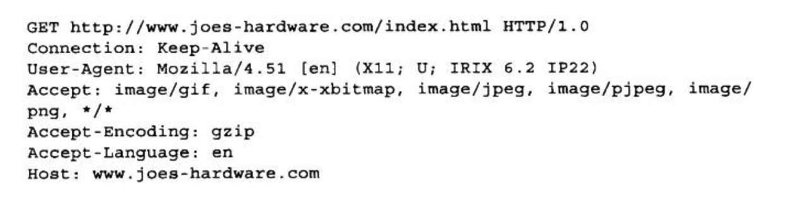

HTTP 权威指南（笔记三）
1. 客户端识别与 cookie 机制
cookie
cookie 是当前识别用户，实现持久会话的最好方式。可以分为两类：会话 cookie 和持久 cookie，它们的区别是它们过期的时间。会话 cookie 为临时 cookie，而持久 cookie 生存时间更长，存储在硬盘上，用于某个用户周期性访问的站点配置文件或登录名。
- 客户端的状态。cookie 的基本思想就是让浏览器积累一组服务器特有的信息，每次访问服务器时都将这些信息提供给它。
- cookie 文件包含：domain、allh、path、secure、expiration、name、value
- cookie 与缓存。如果无法缓存文档，要将其标识出来；缓存 Set - Cookie 首部时要小心；小心处理带有 cookie 首部的请求
- cookie 安全性和隐私
2. 基本认证与摘要认证
质询/响应认证框架
2.1 基本认证
- 使用Base-64 用户名/密码编码
- 安全缺陷。Base-64 容易被反编码、容易被修改内容、假冒服务器容易骗过认证
- 配合 SSL 使用。
2.2 摘要认证
摘要认证试图修改基本认证协议的严重缺陷。
- 永远不会以明文方式在网络上发送密码
- 可以防止恶意用户捕获并重放认证的握手过程
- 有选择的防止报文内容被修改
- 防范常见的攻击方式
摘要认证的核心就是对公共信息、保密信息和有时限的随机值这个组合的单向摘要。
2.3 问题
- 多重质询
- 差错处理
- 保护空间
3. 安全 HTTP
- https 相对于 http 多了SSL or TSL 层
- 数字加密
对称密钥加密技术。发送端和接收端共享相同的密钥
- 公开密钥非对称加密。编码密钥是共享密钥，而解密密钥只有主机才知道。
- 数字签名。可以证明是作者编写了这条报文；可以防止报文被篡改
- 数字证明
4. 实体与编码
4.1 实体主体
实体主体中就是原始数据。首部字段以一个空白的 CRLF （0a）行结束，随后就是实体主体的原始内容。
实体编码，可以变得更安全或节省空间，Content-Length 为编码后的长度。
4.2 实体摘要
为检测实体主体数据是否被修改，发送方使用 Content-MD5 与主体数据生成一个校验和，接收方通过检查这个校验和来捕获所有实体是否被修改。
4.3 内容编码
Accept-Encoding 首部用于指定解码方式，避免服务器使用客户端不支持的编码方式。
Transfer-Encoding 告知接收方为了可靠地传输报文，已经对其进行了何种编码。
TE 用在请求首部中，告知服务器可以使用哪些传输编码扩展。
分块编码是报文属性，而不是主体的属性。
- 差异编码。If-None-Match 接收差异
5 Web 主机托管
通过IP地址进行虚拟主机托管。
优点：能比较好区分不同的目标网站
缺点：IP 地址资源有限
通过 host 首部进行虚拟主机托管。避免过度的地址消耗和虚拟IP地址的限制
语法：Host = “Host” “:” host[“:”port]
例子：

- 镜像的服务器集群。是一排配置相同的 Web 服务器，可以相互替换。HTTP 重定向；DNS 重定向。
6 重定向和负载均衡
重定向：可靠的执行 HTTP 事务、最小化时延、节约网络带宽。
目标是尽快地将 HTTP 报文发送到可用的 Web 服务器上去。
- 通用的重定向方法：
- 代理与缓存的重定向方法